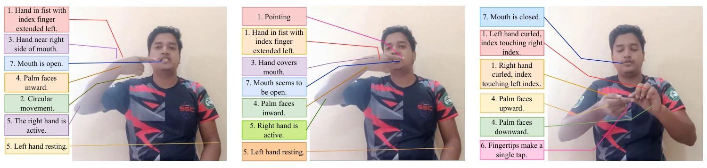

Workshop paper · 2025
Prompting with Sign Parameters for Low-resource Sign Language Instruction Generation
Vision Foundation Models and Gen AI for Accessibility (CV4A11y) at ICCV 2025
{kind=link}

In short
Sign-language instruction generation writes step-by-step text that lets a hearing learner reproduce a sign. BdSLIG is the first dataset for this task in Bengali Sign Language, and Sign Parameter-Infused (SPI) prompting writes standard sign parameters into the prompt so vision-language models produce more structured, reproducible instructions.
Full abstract
Sign Language Instruction Generation (SLIG) produces step-by-step textual instructions that enable non-SL users to imitate and learn sign language gestures, promoting two-way interaction. We introduce BdSLIG, the first Bengali SLIG dataset, used to evaluate Vision Language Models (VLMs) on under-resourced SLIG tasks and long-tail visual concepts. To enhance zero-shot performance, we introduce Sign Parameter-Infused (SPI) prompting, which integrates standard sign parameters, like hand shape, motion, and orientation, directly into textual prompts. Subsuming standard sign parameters into the prompt makes the instructions more structured and reproducible than free-form natural text from vanilla prompting. We envision that our work would promote inclusivity and advancement in sign language learning systems for under-resourced communities.
Seven sign parameters
Sign parameters are the visual cues used to identify or describe a gesture. They serve twice in this work: as the annotation guideline for BdSLIG, and as the structure injected by SPI prompting.
- Handshape: the configuration of fingers and palm (raised, extended, pointed, bent, spread, twisted).
- Movement type: the trajectory or action of the hands (static, circular, squeezing, grabbing, rotating, pulling).
- Location: where the hands are placed (near head, forehead, eye, ear, nose, mouth, chest, shoulder).
- Palm orientation: which way the palm faces relative to the body (inward, outward, upward, downward, left, right).
- Spatial interaction: the role of one or both hands (right or left hand active, both hands symmetric or asymmetric).
- Temporal dynamics: onset, duration, and repetition (sustained hold, repeated oscillation, single tap, repeated tapping).
- Facial cues: expressions that can disambiguate a sign (neutral, brows raised or furrowed, mouth open or closed, lips pursed).
The BdSLIG dataset
BdSLIG draws on BdSLW60, a 60-word Bengali Sign Language recognition dataset. For each word, one representative video was selected and given a written instruction by three trained annotators following the parameter guideline. Annotations were validated in two stages: first for grammatical and semantic consistency, then by a Bengali Sign Language domain expert. Annotators and validators were paid for their work.
Bengali Sign Language is unlikely to appear in the pre-training data of today’s vision-language models, so BdSLIG also serves as a test of long-tail visual understanding.
Prompting framework
Instruction generation runs in three stages. Vanilla prompting skips the second.
- Frame sampling: videos are standardised to 30 frames per second, and every 20th frame is passed to the model, shortening the input while keeping most of the motion.
- Sign parameter injection: the base prompt is extended with the seven parameters, asking for a stepwise, narrative-style instruction set.
- Instruction generation: the model writes the instruction from the sampled frames and the prompt.
Four proprietary models are compared: GPT-4.1-mini, GPT-4.1, Gemini 2.0 Flash, and Gemini 2.5 Pro. Generated instructions are scored against the expert annotations with ROUGE-1, ROUGE-2, ROUGE-L, BLEU, METEOR, and BERTScore.
Results
Vanilla and SPI prompting on BdSLIG. Arrows mark the change from vanilla prompting for the same model.
| Prompting | Model | ROUGE-1 | ROUGE-2 | ROUGE-L | BLEU | METEOR | BERTScore |
|---|---|---|---|---|---|---|---|
| Vanilla | GPT-4.1-mini | 0.526 | 0.232 | 0.342 | 0.174 | 0.396 | 0.396 |
| Vanilla | GPT-4.1 | 0.528 | 0.220 | 0.335 | 0.149 | 0.416 | 0.394 |
| Vanilla | Gemini 2.0 Flash | 0.464 | 0.209 | 0.328 | 0.141 | 0.329 | 0.416 |
| Vanilla | Gemini 2.5 Pro | 0.505 | 0.224 | 0.338 | 0.166 | 0.354 | 0.396 |
| SPI | GPT-4.1-mini | 0.522 ↓ | 0.224 ↓ | 0.326 ↓ | 0.162 ↓ | 0.447 ↑ | 0.396 = |
| SPI | GPT-4.1 | 0.553 ↑ | 0.271 ↑ | 0.384 ↑ | 0.196 ↑ | 0.492 ↑ | 0.441 ↑ |
| SPI | Gemini 2.0 Flash | 0.505 ↑ | 0.250 ↑ | 0.365 ↑ | 0.168 ↑ | 0.359 ↑ | 0.456 ↑ |
| SPI | Gemini 2.5 Pro | 0.507 ↑ | 0.212 ↓ | 0.319 ↓ | 0.141 ↓ | 0.365 ↑ | 0.387 ↓ |
Findings
Open a finding for the detail and evidence behind it.
SPI prompting improves semantic alignment most.
METEOR rises for all four models under SPI prompting. Metrics that reward meaning over surface wording gain the most, suggesting that the parameters help models write more structured and semantically faithful instructions.
GPT-4.1 gains on every metric and scores best overall.
With SPI prompting, GPT-4.1 improves on all six metrics and has the highest score on each except BERTScore, where Gemini 2.0 Flash leads. Smaller variants gain less consistently, which the paper attributes to their limited capacity to interpret nuanced motion cues.
Text-overlap metrics undercount correct instructions.
Two first-step instructions for toothpaste describe essentially the same motion, yet differ in wording, order, and emphasis, so lexical metrics would score them far apart. Evaluating sign instructions properly calls for human experts or larger, context-aware judges.
The right hand, with fingers gently curved and palm facing toward the signer, is brought up to the mouth area. The fingertips lightly touch or hover near the lips, with the hand at chin or mouth level. The left hand remains at rest.
The right hand moves toward the mouth with the index finger fully extended and pointing straight ahead, while the other fingers are curled into a loose fist. At the same time, the mouth opens slightly, revealing the teeth clearly.
Video
Cite this paper
@misc{tariquzzaman2026promptingsignparameterslowresource,
title={Prompting with Sign Parameters for Low-resource Sign Language Instruction Generation},
author={Md Tariquzzaman and Md Farhan Ishmam and Saiyma Sittul Muna and Md Kamrul Hasan and Hasan Mahmud},
year={2026},
eprint={2508.16076},
archivePrefix={arXiv},
primaryClass={cs.HC},
url={https://arxiv.org/abs/2508.16076},
}